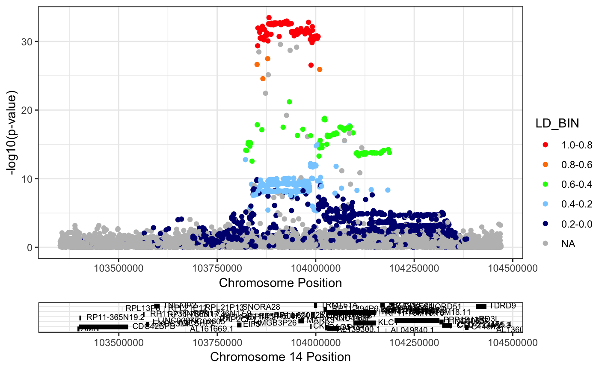
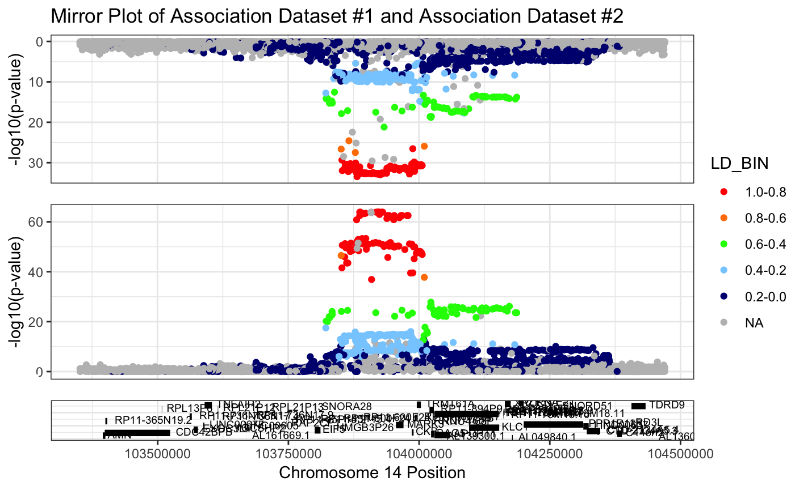

Introduction to RACER
Olivia Sabik
2018-11-01
IntroToRACER.RmdIntroduction
RACER is a package that allows you to generate high quality regional association plots from genomic data using the function singlePlotRACER() and can stack two such plots using the function mirrorPlotRACER() such that they are mirrored across a common x-axis, enabling the direct visual comparison of two associations at the same locus. For example, in order to link the expression of a specific gene with changes in a phenotype it is common to identify colocalizing pairs of expression quantitative trait loci (eQTL) and quantitative trait loci (QTL) from genome-wide association studies (GWAS). The coloc package from Wallace, Giambartolomei, and Plagnol can be used to calculate the posterior probability of two association signals sharing a common genetic impetus, however the Mirror Plot was designed to provide a visual representation of the relationship between the two associations. Additionally, the singlePlotRACER() function can be used to generate a regional association plot for one association data set. RACER also incoroporates two helper functions: formatRACER() which helps you to format your data for plotting and ldRACER() which helps you to format LD information included in your dataset, or can use input rsID numbers to calculate LD using the 1000 genomes phase III data.
Mark3 eQTL and BMD GWAS: A Demonstration of RACER
In this vignette, we will demonstrate the utility of these plots using data from our lab’s recent work (Calabrese GM, Mesner LD, Stains JP, et al. Cell Systems. 2017;4(1):46–59.e4). In this publication, we identified the gene Mark3 as a putative novel regulator of bone mineral density through the integration of GWAS and co-expression network analysis in mice. In order to understand the relationship between expression of Mark3 and BMD in humans, we utilized coloc, and determined that there was a 97.4% chance that a GTEx eQTL for Mark3 and a GWAS association for BMD shared a genetic driver. However, in our original publication, we did not visually represent this result. This vignette begins with Mark3 eQTL data from the GTEx database (https://gtexportal.org/home/) and BMD GWAS data from the 2017 study using data from the UK BioBank (Kemp JP, Morris JA, Medina-Gomez C, et al. Nature Genetics. 2017;49(10):1468-1475).
library(devtools)
library(RACER)
data("mark3_bmd_gwas")
data("mark3_eqtl")Inputs
RACER will accept any association dataset, as long as it contains a column with chromosome information, a column with chromosome position, and a column with summary statistics, either p-values or -log10(p-values).
If you wish to include LD information in your plot, you must also include a column with precomupted LD information, or a column with rsID numbers, which can be used to calculate LD.
If you look at the headers for our two example input GWAS data set, we have a column containing chromosome information(3), a column with position information(4), a column with p-values(11), and a column with rsID numbers(2). While RACER won’t use the information in the other columns, they can still be included in the data frame.
head(mark3_bmd_gwas)## # A tibble: 6 x 12
## SNPID SNP CHR BP ALLELE1 ALLELE0 A1FREQ INFO BETA SE
## <chr> <chr> <int> <int> <chr> <chr> <dbl> <dbl> <dbl> <dbl>
## 1 14:1… rs10… 14 1.03e8 A G 0.928 0.997 -0.00128 0.00653
## 2 14:1… rs17… 14 1.03e8 G T 0.919 0.996 -0.0108 0.00619
## 3 14:1… rs14… 14 1.03e8 C A 0.997 0.781 -0.0279 0.0328
## 4 14:1… rs10… 14 1.03e8 T C 0.807 0.997 -0.00422 0.00428
## 5 14:1… rs10… 14 1.03e8 C T 0.945 0.998 -0.00414 0.00740
## 6 14:1… rs13… 14 1.03e8 G A 0.991 0.885 -0.0378 0.0189
## # ... with 2 more variables: P <dbl>, N <int>In our eQTL dataset we have a column containing chromosome(11), position(12), p-values(8), and rsIDs(15).
head(mark3_eqtl)## variant_id gene_id tss_distance ma_samples
## 1 14_102851730_TA_T_b37 ENSG00000075413.13 -999999 8
## 2 14_102852787_A_G_b37 ENSG00000075413.13 -998942 25
## 3 14_102853007_C_T_b37 ENSG00000075413.13 -998722 24
## 4 14_102853147_A_ATGTTGT_b37 ENSG00000075413.13 -998582 24
## 5 14_102853150_T_C_b37 ENSG00000075413.13 -998579 200
## 6 14_102853260_G_A_b37 ENSG00000075413.13 -998469 240
## ma_count maf pval_nominal slope slope_se chr variant_pos ref
## 1 8 0.0100251 0.3139540 0.2190960 0.2172520 14 102851730 TA
## 2 27 0.0338346 0.5226750 0.0705731 0.1102870 14 102852787 A
## 3 26 0.0325815 0.4627400 0.0818931 0.1113900 14 102853007 C
## 4 26 0.0326633 0.4464240 0.0849331 0.1114170 14 102853147 A
## 5 229 0.2869670 0.0446394 -0.0963342 0.0477925 14 102853150 T
## 6 289 0.3630650 0.7872620 0.0121183 0.0448682 14 102853260 G
## alt num_alt_per_site rs_id
## 1 T 1 rs201190169
## 2 G 1 rs148267339
## 3 T 1 rs1555615
## 4 ATGTTGT 2 rs3068224
## 5 C 1 rs12586378
## 6 A 1 rs12879435Formatting input association data using RACER
The first step for using RACER is to format your input data. The formatRACER() function will unify the column names in your data so they are compatible with RACER and with one another. This function takes your input dataframe, and the index of the columns containing information about the chromosome, location, and p-value or -log10(p-value).
head(RACER::formatRACER(assoc_data = mark3_bmd_gwas, chr_col = 3, pos_col = 4, p_col = 11))## SNPID SNP CHR POS ALLELE1 ALLELE0 A1FREQ
## 1 14:102500153:A:G rs10149958 14 102500153 A G 0.928255
## 2 14:102500244:G:T rs17512713 14 102500244 G T 0.918942
## 3 14:102500421:C:A rs149496322 14 102500421 C A 0.996638
## 4 14:102501150:T:C rs10142490 14 102501150 T C 0.807328
## 5 14:102501219:C:T rs10130336 14 102501219 C T 0.945126
## 6 14:102501220:G:A rs139783304 14 102501220 G A 0.990926
## INFO BETA SE P N LOG10P
## 1 0.997304 -0.00128117 0.00653323 0.86 142487 0.06550155
## 2 0.995594 -0.01076310 0.00618771 0.10 142487 1.00000000
## 3 0.780536 -0.02785410 0.03282310 0.41 142487 0.38721614
## 4 0.996559 -0.00421757 0.00428378 0.42 142487 0.37675071
## 5 0.998043 -0.00413914 0.00740183 0.76 142487 0.11918641
## 6 0.885150 -0.03783390 0.01889920 0.11 142487 0.95860731As you can see, the output of RACER format looks quite a bit like the input, but there are a few subtle changes. Some of the column names have been changed for compatibility, and a -log10(p-value) column had been calculated and named LOG10P. You do need to save this new object to be able to use it in the plotting function.
mark3_bmd_gwas_f = RACER::formatRACER(assoc_data = mark3_bmd_gwas, chr_col = 3, pos_col = 4, p_col = 11)
mark3_eqtl_f = RACER::formatRACER(assoc_data = mark3_eqtl, chr_col = 10, pos_col = 11, p_col = 7)Adding linkage disequilibrium information with RACER
Neither of our input datasets contain information about linkage disequilibirum, so we’re going to use the column of rsIDs to pull LD information down from the 1000 Genomes Phase III Database. This will require the formatted data set, the index of the column containing the rsID numbers, the populations from 1000 genomes you want to use to calculate LD (in this example I use the five European in the database), and the rsID of the lead SNP of the association.
head(RACER::ldRACER(assoc_data = mark3_bmd_gwas_f, rs_col = 2, pops = "EUR", lead_snp = "rs11623869"))## All inputs are go!## Reading in association data...## Calculating LD using rs11623869...## RS_ID
## 1 14:102506281_TCTC_T
## 2 14:102509906_C_T
## 3 14:102511064_AGGGTGGGTGGCGAGGGTCCCCTCACGCG_A
## 4 14:102514463_G_A
## 5 14:102518763_C_T
## 6 14:102520092_T_G
## SNPID CHR POS
## 1 14:102506281:TCTC:T 14 102506281
## 2 14:102509906:C:T 14 102509906
## 3 14:102511064:AGGGTGGGTGGCGAGGGTCCCCTCACGCG:A 14 102511064
## 4 14:102514463:G:A 14 102514463
## 5 14:102518763:C:T 14 102518763
## 6 14:102520092:T:G 14 102520092
## ALLELE1 ALLELE0 A1FREQ INFO BETA
## 1 TCTC T 0.998184 0.906131 0.003575450
## 2 C T 0.998527 0.728294 0.020254000
## 3 AGGGTGGGTGGCGAGGGTCCCCTCACGCG A 0.934146 0.973388 -0.000201145
## 4 G A 0.998851 0.639664 -0.006352590
## 5 C T 0.996834 0.696738 -0.051191500
## 6 T G 0.998002 0.699914 -0.031375700
## SE P N LOG10P LD_BIN LD
## 1 0.04143080 0.91 142487 0.040958608 NA NA
## 2 0.05141380 0.80 142487 0.096910013 NA NA
## 3 0.00689435 0.98 142487 0.008773924 NA NA
## 4 0.06237600 0.69 142487 0.161150909 NA NA
## 5 0.03589580 0.13 142487 0.886056648 NA NA
## 6 0.04781450 0.59 142487 0.229147988 NA NAAs with formatRACER(), the output of ldRACER() is a modified data frame, now with an LD column and an LD_BIN column, which will be used in the plot. These will need to be saved as well.
mark3_bmd_gwas_f_ld = RACER::ldRACER(assoc_data = mark3_bmd_gwas_f, rs_col = 2, pops = "EUR", lead_snp = "rs11623869")## All inputs are go!## Reading in association data...## Calculating LD using rs11623869...mark3_eqtl_f_ld = RACER::ldRACER(assoc_data = mark3_eqtl_f, rs_col = 15, pops = "EUR", lead_snp = "rs11623869")## All inputs are go!## Reading in association data...## Calculating LD using rs11623869...Plotting a single dataset with RACER
Now that we have our data formatted and complete, we can plot our associations. First, we will plot each association separately, using the singlePlotRACER() function. The singlePlotRACER() requires your formatted association dataframe, with optional ld formatting if you would like to include ld information, the chromosome you would like to plot, the build of the genome you would like to use to plot the genes (default = hg19), and the method you wish to plot by. You can plot the association by: (1) a gene, plotby = “gene”, and gene_plot = “GENE_NAME” (2) a snp, plotby = “snp”, and snp_plot = “rsID” (3) coordinates, plotby = “coord”, start_plot = x, end_plot = y
Example 1: Plotting the GWAS association around the MARK3 gene
RACER::singlePlotRACER(assoc_data = mark3_bmd_gwas_f_ld, chr = 14, build = "hg19", plotby = "gene", gene_plot = "MARK3")## Plotting by...## gene: MARK3## Reading in association data## Generating Plot
Example 2: Plotting the GWAS association around the lead snp, rs11623869
RACER::singlePlotRACER(assoc_data = mark3_bmd_gwas_f_ld, chr = 14, build = "hg19", plotby = "snp", snp_plot = "rs11623869")## Plotting by...## snp rs11623869## Reading in association data## Generating Plot
Example 3: Plotting the eQTL by specifying coordinates
RACER::singlePlotRACER(assoc_data = mark3_eqtl_f_ld, chr = 14, build = "hg19", plotby = "coord", start_plot = 103500000, end_plot = 104500000)## Plotting by...## coord## Reading in association data## Generating Plot
Making a mirror plot with RACER
Finally, RACER can help you to compare the assocations by making what we call a mirror plot. The function takes two formatted association data frames, and returns a plot with dataset #1 on the bottom, and dataset #2 inverted on the top. This allows for a more direct visual comparsion of the two datasets.
mirrorPlotRACER(assoc_data1 = mark3_bmd_gwas_f_ld, assoc_data2 = mark3_eqtl_f_ld, chr = 14, plotby = "gene", gene_plot = "MARK3")## Plotting by...## gene: MARK3## Reading in association data## Generating plot.